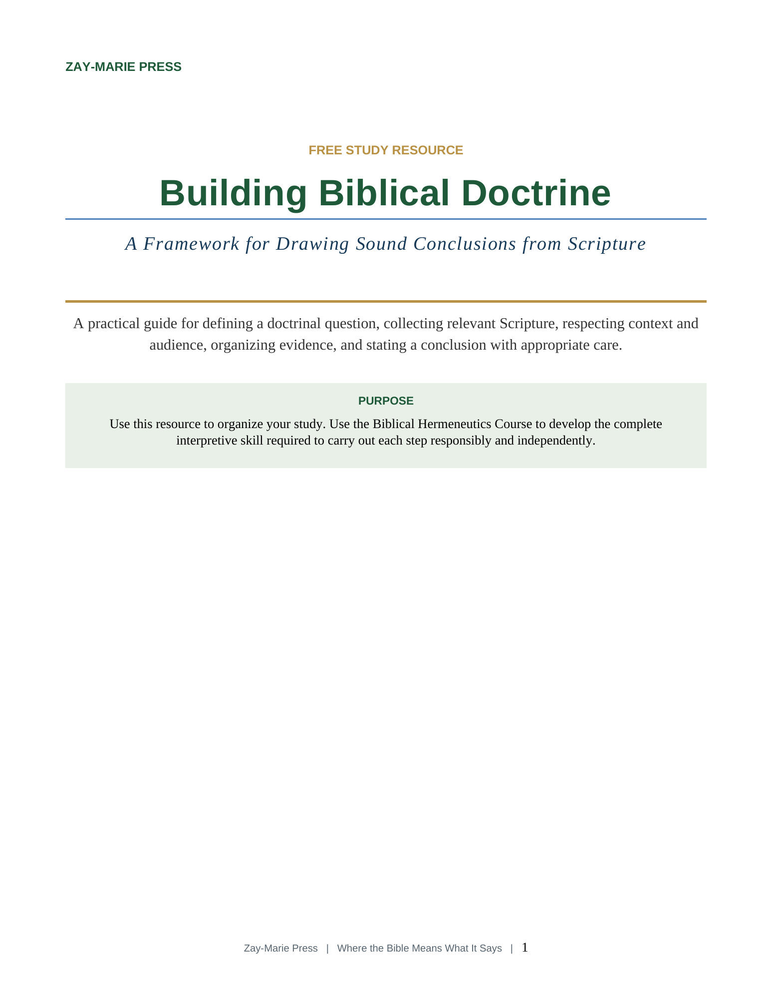
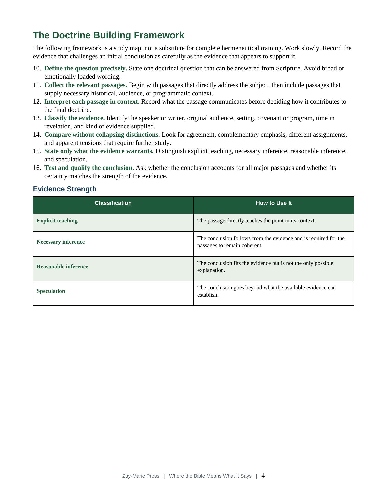
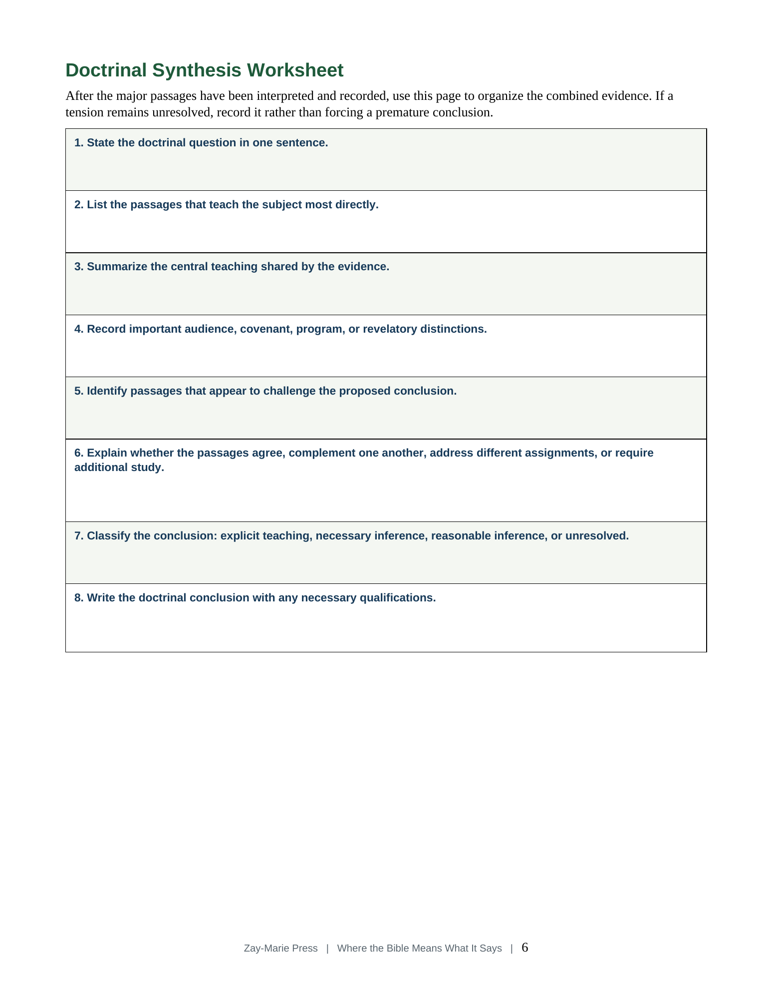

{kind=link}
Define the Question
Frame one answerable doctrinal question before collecting passages or defending a conclusion.

Click cover to enlarge
A Framework for Drawing Sound Conclusions from Scripture
Move from individual passages to carefully supported doctrinal conclusions. This concise framework helps you define the question, preserve context and audience, classify the evidence, and state only what Scripture warrants.
Read or Download the PDFThis resource helps you move beyond collecting isolated verses and toward building doctrinal conclusions that account for context, audience, progressive revelation, and divine program. It provides a disciplined structure for organizing biblical evidence, identifying the strength of each claim, recognizing unresolved questions, and stating conclusions with appropriate care.
Sound doctrine begins with the meaning of each passage in its own setting. The resource follows the sequence meaning first, assignment second, application third, while preserving audience, progressive revelation, Israel and the Body of Christ, and the Acts 9–28 overlap.
Frame one answerable doctrinal question before collecting passages or defending a conclusion.
Record context, audience, revelatory setting, program, and the strength of each claim.
Distinguish explicit teaching, necessary inference, reasonable inference, and speculation.

Follow seven bounded steps from a precise question through evidence collection, comparison, testing, and a qualified conclusion.

Record the controlling passages, important distinctions, contrary evidence, evidence strength, and final doctrinal statement.
This free resource helps readers organize a doctrinal investigation. The Biblical Hermeneutics Course supplies the comprehensive forty-lesson training needed to interpret difficult passages, evaluate competing conclusions, practice diagnostic analysis, make responsible application, and progress toward independent study.
Explore the Biblical Hermeneutics Course{kind=link}
{kind=link}